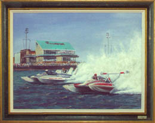

|
The Spirit of Detroit Thunderfest and world renowned marine artist
Jim Clary are teaming up to kick off an exciting new way to celebrate 100
years of Detroit hydroplane racing!
For the first time ever, Jim Clary will be creating a series of four annual collector prints celebrating a Century of Hydroplane Racing on the Detroit River. |
 |
 |
|
THE 1976 GOLD CUP" [2000]  |
 |
|
This collector series of four commemorative prints will begin production in
1998. Each print will be devoted to a specific era in hydroplane racing and
highlight key drivers, owners, and their powerboats. Printed in limited
editions of 1000, each print will be signed and numbered by the artist.
The first collector print will artistically celebrate the Gar Wood era and will feature a historic representation of MISS AMERICA II. It will also include the `old' Detroit Yacht Club in its 1920s splendor, along with other memorabilia and personalities of the era. The three subsequent prints will capture the hydroplane racing memories of the post-war, piston-powered and turbine eras. A Detroit landmark will be incorporated into each design. Clary also will use a popular artistic technique known as “ghosting” to feature famous hydro celebrities from each selected era. Proceeds from the sale of these prints will help support the Spirit of Detroit Thunderfest, a not-for-profit, volunteer civic organization dedicated to perpetuating Detroit's hydroplane racing. Prints may be ordered directly from Spirit of Detroit Thunderfest. For more about Cap'n Jim, visit his web-site.
All contents Copyright © 1998-2001 Spirit of Detroit THUNDERFEST, except where noted.
Web page created by Brian Reed.
|